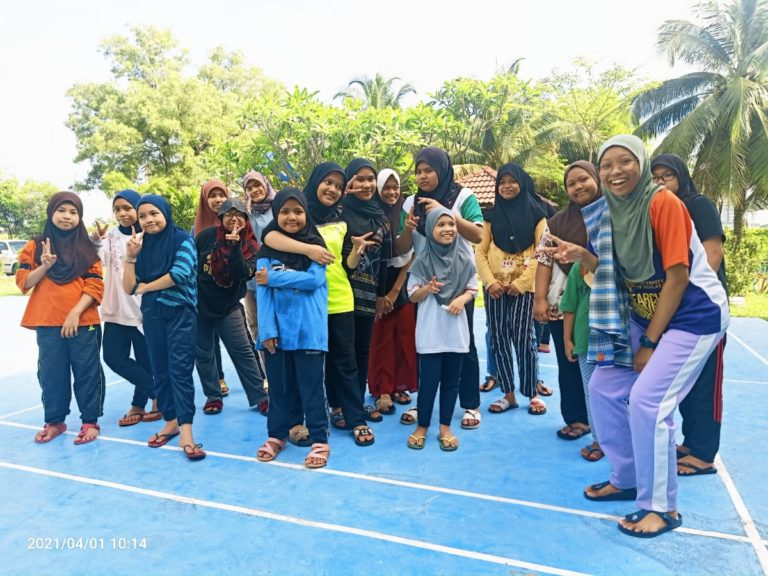

Who We Are
RACTAR is a charitable home established in 1993 to support and empower young girls who have lost their families or come from challenging backgrounds. Located in Subang Jaya, Selangor, RACTAR offers a secure and loving environment for children to grow and succeed.
We are committed to improving the quality of life for these girls by ensuring they have access to proper shelter, nutritious food, healthcare, formal education, and moral guidance.
Our History
RACTAR (Rumah Amal Cahaya Tengku Ampuan Rahimah) was established in 1993 in loving memory of the late Tengku Ampuan Rahimah, the former Queen of Selangor. Known for her generosity and compassion, her legacy lives on through this home dedicated to underprivileged girls.
The home started in a small rented house in Subang Jaya with just 6 girls under care. Through tireless community support and contributions from kind-hearted donors, RACTAR expanded its facilities and now houses over 30 children, providing them with education, healthcare, and emotional support.
Our Core Values
- Compassion: Treating each child with love and respect
- Integrity: Ensuring transparency and honesty in all we do
- Commitment: Dedicated to their long-term development
- Empowerment: Helping them grow with confidence
Meet Our Team
RACTAR is managed by a small but dedicated team:
- Founder: Pn. Aminah Rahman
- Director: En. Shahril bin Harun
- Social Services Lead: Cik Nurul Huda
- Education Coordinator: Pn. Farah Zain